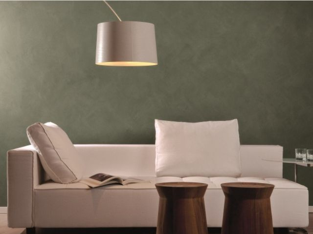
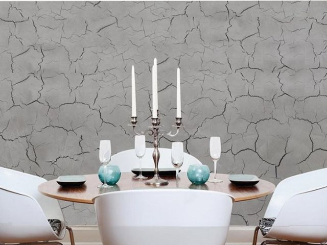

Коллекция NERO DECOR · 2 продукта
Декоративные краски и спецэффекты
Бархатистая замша Velluto и кракелюрный лак Marte, который превращает стену в старинную поверхность с сеткой трещин.

Декоративная краска
Velluto
Матовая декоративная краска с эффектом замши: вкрапления добавляют фактурность, глубокий мат дает теплоту и тактильную мягкость.
- Расход 250–350 г/м²
- 1 кг, 5 кг

Специальное покрытие
Marte
Кракелюрный лак: создает эффект старой стены с растрескавшейся поверхностью, толщина верхнего слоя задает толщину трещин.
- Расход 100–200 г/м²
- 1 кг